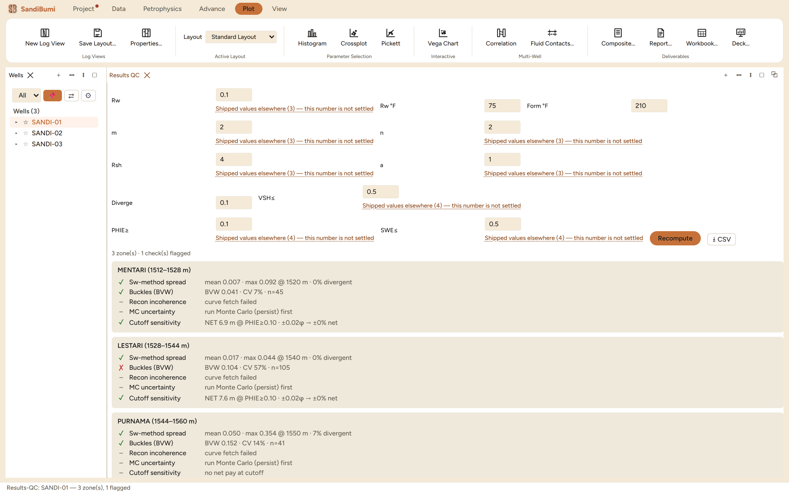

Results QC is the cross-examination of a finished saturation
interpretation: it recomputes water saturation by several independent
methods from the same inputs, runs a battery of coherence checks, and
reports each one as a pass, a flag, or "not yet runnable" with the reason.
Reach for it after the chain has run and before the numbers ship;
its job is to find the disagreement you would otherwise find in a peer
review.
The pane

Five checks in each of the three zones, one flagged: the
Sw-method spread passes everywhere, Buckles flags a 57% coefficient of
variation in LESTARI, two checks await their prerequisite runs, and the
cutoff check confirms the porosity cutoff is on a plateau. The envelope
plot shows where the five methods disagree.
The parameter fields (Rw with its temperature pair, m, n, Rsh,
a, plus the cutoffs) each carry the "Shipped values elsewhere"
catalogue; enter the study's settled values so the recomputation tests
the interpretation, not a different one.
Five Sw methods are recomputed and drawn as a min–max
envelope by depth: a clean-sand Archie form, two Simandoux variants, the
Indonesia equation and the Juhász normalised Waxman-Smits
proxy.
The checks are honest about their prerequisites: reconstruction
incoherence needs a mineral-solver recon run and MC uncertainty needs a
persisted Monte Carlo, and each says so instead of passing
vacuously.
⭳ CSV exports the check table for the review
record.
Step by step
Open Petrophysics ▸ Results QC…; the pane
computes a first pass immediately.
Set the study's parameter values and cutoffs, press
Recompute, and read the check list top to bottom.
For any flag, switch the detail zone and read the two plots:
the envelope says where the methods diverge, the Buckles plot says
whether the flagged variability is transition zone or noise.
Reading the result
On the example wells the method spread passes in every zone: mean
disagreement 0.007 saturation units in MENTARI, 0.017 in LESTARI and 0.050
in PURNAMA, worst 0.354 at 1550 m with 7% of samples divergent. That
worst point is the reading to chase: 1550 m is the base of the
hydrocarbon sand, where the shaly-sand methods separate from clean-sand
Archie exactly as their physics says they should.
The Buckles check flags one zone: in LESTARI the product of saturation
and porosity varies 57%. On one homogeneous zone at irreducible saturation
that would be damning; across a gas sand that passes down into a wet
interval it mostly restates the geology, which is why the check reports its
evidence (BVW 0.104, n=105) rather than a verdict — and why the two
neighbouring zones sit at 7% and 14%. The two grey checks are the honest
state "not yet runnable", and the cutoff line compresses the sensitivity
sweep into one sentence per zone: 6.9 and 7.6 m of net at the porosity
cutoff, unchanged by a ±0.02 porosity wiggle.
QC and pitfalls
Feed it the settled parameters. The recomputation is only a
check if it uses the study's own Rw, m and n; defaults here would test
a strawman.
Run the checks per zone before acting on a whole-well flag.
A Buckles CV over mixed zones is expected; the same CV inside one
clean zone is a finding.
Method spread is a warning, not an error bar. Methods can
agree and all be wrong (same bad Rw); the spread only catches the
disagreements.